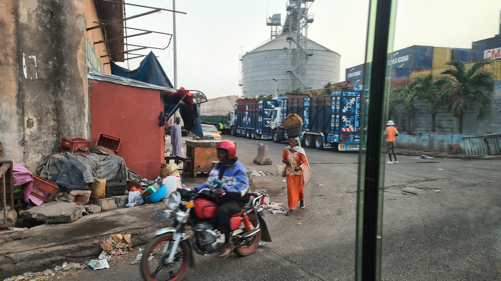
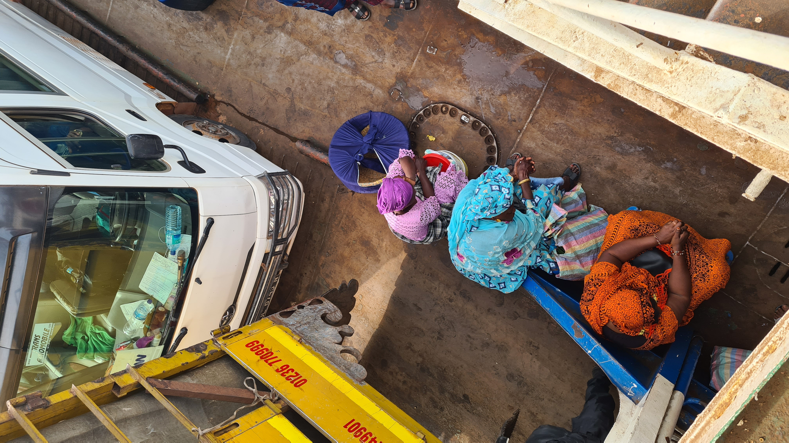

H&M eko troska czy ekościema? Ile jest prawdy w zapewnieniach światowego giganta odzieżowego w twierdzeniu, że dba o planetę?

Wstęp
Firma H&M powstała za sprawą Erlinga Perssona, szwedzkiego biznesmena, który założył swój pierwszy sklep w 1947 roku krótko po swoim powrocie ze Stanów Zjednoczonych. Persson był zainspirowany dostępnością ubrań w Stanach i postanowił wdrożyć to samo w swoim sklepie. Chciał, aby ubrania były i w dobrej jakości, i dostępne w przystępnych cenach.
Najpierw otworzył sklep w mieście Västerås o nazwie ,,Hennes”, co w tłumaczeniu na polski oznacza ,,jej”. W 1968 roku kupił sklep myśliwski ,,Mauritz Widforss”, którego nazwę zmienił na ,,Hennes & Mauritz”. Dzięki temu powstała firma znana dziś jako H&M. Aktualnie marka ma ponad 4 tys. sklepów na całym świecie i jest powszechnie znana. Ubrania tej marki są szeroko dostępne, jednak czy firma dba o dobrą jakość ubrań? Rocznie H&M produkuje od 12 do 16 kolekcji, większość w Azji, np. w Bangladeszu.
Kraje skandynawskie, między innymi Szwecja, są znane z wysokiej jakości produktów, pięknego i niezwykle dopracowanego designu czy wysokiego poziomu zaufania ludzi do władz i instytucji oraz siebie nawzajem. Jakość jest w Skandynawii czymś oczywistym w odniesieniu do różnych obszarów życia. Ma to związek z filozofią tzw. państwa dobrobytu, czyli welfare state. Sören Holmber Instytutu SOM Uniwersytetu w Goeteborgu wskazuje:
„JAKOŚĆ TO COŚ, z czym wszyscy możemy się łatwo utożsamić. Ale co to tak naprawdę oznacza? W słowniku możemy przeczytać, że jakość odnosi się do natury i cech – i że jest przeciwieństwem ilości. W praktyce jednak jakość można określić jako miarę tego, jak dobrze coś spełnia wymagania, potrzeby lub oczekiwania. W biznesie produkt lub usługa są uważane za wysokiej jakości, gdy spełniają oczekiwania klienta końcowego i tworzą dla niego wartość. Nawet w społeczeństwie jako całości jakość jest powiązana z wartością dla klienta, ale wtedy klientami są obywatele, a usługi obejmują takie rzeczy, jak szkoła, opieka zdrowotna i opieka społeczna. W KAŻDYM PRZYPADKU jakość ma znaczenie w wielu aspektach naszego codziennego życia. Dzięki wysokiej jakości produktom i usługom życie staje się łatwiejsze. Jakość jest jednym z najważniejszych czynników budujących zaufanie i pewność siebie w szerokim tego słowa znaczeniu. Powszechne zaufanie z kolei stanowi fundament efektywnego funkcjonowania społeczeństwa. W wielu krajach zaufanie spada, ale nie w Szwecji.”1
H&M zdając sobie sprawę z przywiązania Skandynawów do jakości i na własnym rynku podkreśla ekologiczne podejście. Dlatego, podobnie inne marki działające na skandynawskim rynku w sektorze fast fashion, kładzie nacisk na kolekcje zrównoważone lub materiały organiczne, ponadczasowe itd.
Piękne ubrania, które widzimy na wielkich bilbordach czy okładkach magazynów, dają nam poczucie nieskończonych możliwości wyrażania siebie oraz tego, że możemy stworzyć każdą możliwą wersję swojej osoby. Gdy w 2013 roku zarysował się trend ekologicznego podejścia do różnych obszarów życia, trafił on także do przemysłu odzieżowego. Firma H&M rozpoczęła zbiórkę tekstyliów. Klienci dostali możliwość oddania niechcianych ubrań do specjalnego kosza. Na nim często był napis, który zachęca do zakupu ze zniżką 20%, jeśli włoży się ubranie do tego kosza. H&M zapewniał, że rzeczy zostaną poddane recyklingowi i wykorzystane do produkcji nowych, dzięki czemu zyskują i firma, i konsumenci (firma – finansowo, a konsumenci – mając poczucie, że robią coś dobrego dla planety).
Właśnie w tym kontekście należy pomyśleć o tzw.greenwashingu i zadać sobie pytanie, czy kosze oraz akcja rzeczywiście działają? H&M podaje na swojej stronie:

„Od 2013 roku zebraliśmy ponad 172 tys. ton używanej odzieży i tekstyliów. Dzięki zbieraniu, sortowaniu, odsprzedaży, ponownemu wykorzystaniu i recyklingowi, możemy dać tym przedmiotom drugie życie. […] W 2023 roku Grupa H&M i REMONDIS (światowy lider w dziedzinie gospodarki odpadami) założyły spółkę Looper Textile Co., która ma na celu bardziej bezpośrednie uczestnictwo w sortowaniu niepotrzebnej odzieży i tekstyliów oraz wspieranie ich ponownego wykorzystania i recyklingu. Looper Textile Co. oferuje lokalnym samorządom i sprzedawcom detalicznym rozwiązania pozwalające wydłużyć okres użytkowania tych artykułów.”2
Czy tak rzeczywiście jest? Czy H&M naprawdę recyklinguje ubrania, czy może to tylko marketingowy chwyt?
Dziennikarze szwedzkiej gazety ,,Aftonbladet” wrzucili ubrania z wszytymi w nie nadajnikami air tag do kontenerów w sklepie H&M w Sztokholmie. Dowiedli, że część ubrań wędrowała do krajów afrykańskich, europejskich i azjatyckich. Część jednak w ogóle zniknęła z geolokalizacji w związku z prawdopodobnym ich zniszczeniem. Okazuje się, że ubrania są transportowane setki i tysiące kilometrów, a większość jest wyrzucana na wysypiska śmieci, spalana lub przerabiana na proste tekstylia. Z dziennikarskiego śledztwa wynika, że ubrania, które trafiają do Afryki, są traktowane jak śmieci, mimo iż nadają się do użytku. Bardziej opłaca się ich wyrzucanie niż recyklingowanie. To tak H&M rozumie recykling.
W jednym z artykułów można przeczytać, że: „Jedna z tych rzeczy, kurtka w paski, trafiła ze Szwecji do miasta Kotonu w Beninie. Tamtejszy ludzie nazywają takie używane ubrania »ubraniami martwych białych ludzi«. Uważa się, że poprzedni właściciele musieli umrzeć, co wyjaśnia, dlaczego chcą się pozbyć wszystkiego. Każdego roku około 92 miliony ton ubrań trafia na wysypiska śmieci. Te otwarte wysypiska stanowią duże zagrożenie dla środowiska, ponieważ zanieczyszczają powietrze, wodę i ziemię w lokalnych społecznościach, uwalniając szkodliwe gazy cieplarniane”.3
Jednocześnie na stronie H&M przedstawiany jest obraz proekologicznej firmy prowadzącej programy takie jak Sustainable Impact Partnership Program itd. W każdym z tych programów firma wyjaśnia, jak pracuje na rzecz ekologii. Przedstawiona jest masa danych, tabeli, które jednak nie są zbieżne z doniesieniami szwedzkich dziennikarzy. H&M wspomina o firmach proekologicznych, z którymi współpracuje, powstaje jednak pytanie, czy one też używają marketingowych chwytów, czy też rzeczywiście działają na rzecz środowiska.
Ze strony firm wygląda to tak, jakby nie miały szacunku ani do krajów biedniejszych, ani do konsumentów. Kierują się z reguły tylko zyskiem, ale nie chcą, by ktoś to zauważył. Sprawy niewygodne są zamiatane pod dywan i opakowywane w piękną kampanię marketingową. Ubrania są wywożone w odludne miejsca, więc cały greenwashing’owy scam zostanie niezauważony przez przeciętnego odbiorcę. Wykorzystuje się słabsze i łatwiejsze do zdominowania kraje, aby uzyskać określone cele.
Jeśli ja – mieszkanka europejskiego kraju – chcę kupić sobie nowy t-shirt, pójdę do galerii handlowej i kupię go bez żadnego problemu. Będzie czysty, śnieżnobiały i pięknie pachnący. Jeśli byłabym mieszkanką Ghany i chciałabym kupić sobie nowy t-shirt, jest duża szansa, że nie pochodziłby z pięknego sklepu i nie byłby śnieżnobiały (ponieważ nie byłoby mnie na niego stać lub nie byłoby takiego sklepu). Pochodziłby z transportu wyrzuconych rzeczy, którego część trafia na targ. Może byłoby też tak, że szukałabym t-shirtu na wysypisku śmieci. Nie byłby on ani ładnie pachnący, ani nowy.
Tkwimy w systemie polegającym na tym, że jedni masowo wyrzucają ubrania bez świadomości tego, co się z nimi dzieje, a inni muszą przystosować się do warunków, które im się narzuca. Jak możemy powstrzymać działania marek takich jak H&M? Moglibyśmy przestać kupować ubrania w tych sklepach, ale musiałaby to być akcja na dużą skalę. Możemy zacząć o tym mówić, aby nasze władze zmieniły system. Pytanie, czy chcą i czy to zrobią? Uważam, że wszystko zaczyna się od zwykłych ludzi, ale wiele zależy również od ludzi, którzy mają władzę. Trudno jednak zaufać marce, która dla zysku celowo kłamie o swojej aktywności. Łatwiej zrobić kampanię dotyczącą zrównoważonego rozwoju i bycia eko firmą z pięknymi modelkami na tle przyrody i zanieczyszczać środowisko, niż przyznać się do kłamstwa i recyklingować ubrania tak, aby nie wyrządzać krzywdy otaczającemu nas światu.
Trend na ekologiczny lifestyle szczególnie rozwinął się podczas pandemii. Władze H&M, widząc wzrost świadomości społecznej związanej z ekologią, zaczęły dostrzegać, jak ta świadomość wpływa na postrzeganie ich marki/firmy. Jeśli ludzie stają się bardziej świadomi swojego otoczenia, spodziewają się od władz firm, aby dorównały ich oczekiwaniom. Jeśli nie będą spełniać tych oczekiwań, stracą chęć do kupowania ubrań w H&M. Sądzę, że program ,,zbiórki tekstyliów” powstał, aby zakamuflować wysyłanie niewiarygodnej ilości ubrań do biedniejszych krajów i zareklamować się jako marka odzieżowa, która dba i troszczy się o zrównoważony rozwój. Trudno uwierzyć, by firma taka jak H&M, produkująca ubrania w masowy sposób, zdołała zrealizować w praktyce deklaracje o proekologicznym podejściu. Mimo ukazania się wielu artykułów na temat działań firmy sprzecznych z ochroną środowiska, nikt z zarządu firmy nie zareagował. Być może dlatego, iż kierownictwo firmy zdaje sobie sprawę z popularności marki i płynącej z tego siły na rynku. Powinniśmy wywrzeć większą presję na ekologiczne podejście w firmach, lecz takie, które nie byłoby tylko iluzją, a prawdziwą troską o nasz świat i biedniejsze kraje.
Bibliografia
- H&M, Program Zbiórki Tekstyliów.
- H&M, Supply chain
- H&M, Sustainable Impact Partnership Program
- Juliana LaBianca, Finally! We’ve Uncovered What H&M Stands For, Reader’s Digest
- Sophia, Unravelling the Illusion: H&M’s “Close the Loop” Textile Waste Initiative a Greenwash(https://cosh.eco/en/articles/unravelling-the-illusion-hms-close-the-loop-textile-waste-initiative-a-greenwash)
- Staffan Lindberg i Magnus Wennman, “Här dumpas H&M-kläderna du ”återvinner”, aftonbladet.se
- Polly Barks, The H&M recycling program is a scam: what to do instead, blog
- Josephine Daly Tempelaar, H&M and Waste Colonialism: Polluting the World with “Dead White Men’s Clothes”
- Business Insider, Kto zarabia najwięcej na wywożeniu śmieci.
- Peter Wiklund, Svensk kvalitet ger värdefullt försprång
- H&M, Human rights policy
- Amy Emmert, The rise of the eco-friendly consumer, strategy-business.com, PwC publication
- Market like a Swede
-
Peter Wiklund, “Svensk kvalitet ger värdefullt försprång”, “Swedac.se”, https://www.swedac.se/swedac_magasin/svensk-kvalitet-ger-vardefullt-forsprang/ ↩︎
-
H&M, Program Zbiórki Tekstyliów, www.2hm.com, https://www2.hm.com/pl_pl/sustainability-hm/services/garment-collecting.html?srsltid=AfmBOooRBCsrzIfWD6PlNYh6Lu-HciR_oSgF5HRJQrvZqG6Wqh9PLVN- ↩︎
-
Staffan Lindberg i Magnus Wennman, “Här dumpas H&M-kläderna du ”återvinner”, aftonbladet.se https://www.aftonbladet.se/nyheter/a/O8PAyb/har-dumpas-h-m-kladerna-du-atervinner ↩︎